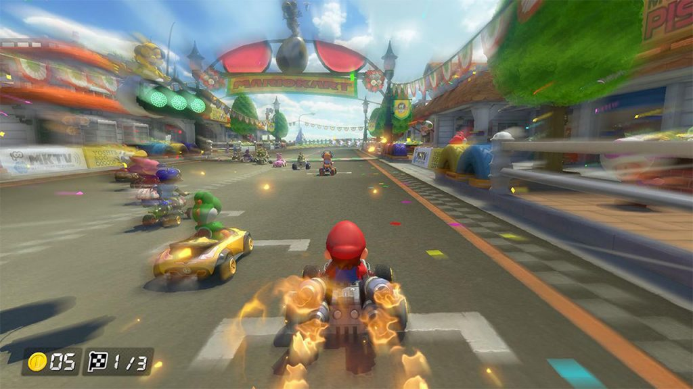
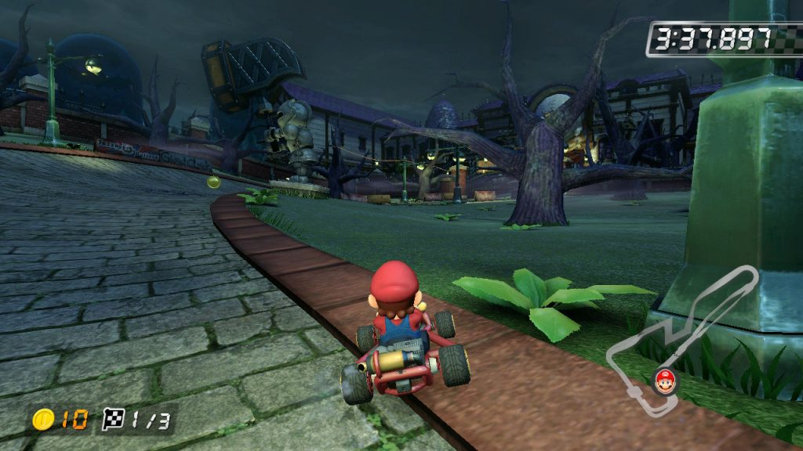
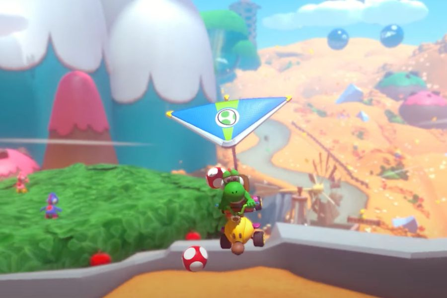

Mario Kart™ 8 Deluxe
Mario Kart 8 Deluxe es un juego de carreras de Nintendo Switch. Es un port mejorado del título anterior de Mario Kart, Mario Kart 8 de la Wii U, con características adicionales como nuevos personajes, nuevos objetos y principalmente, un renovado Modo de Batalla.
El juego se anunció formalmente como parte de la presentación de Nintendo Switch el 13 de enero de 2017 y fue lanzado el 28 de abril de 2017 mundialmente y con muchos modos de jugabilidad.
- Los Personajes ahora pueden llevar hasta dos objetos a la vez mediante la caja de objetos doble, que regresa de Mario Kart: Double Dash!!.
- El juego también introduce "Smart Steering" y "Auto-accelerate" para principiantes, lo que impide desviarse de la pista y acelerar sin tocar ningun boton, respectivamente.
- Se añade un nuevo mini-turbo llamado "ultra mini-turbo", que aparece con chispas de color moradas.
- El juego cuenta con todo el contenido base y DLC de Mario Kart 8. Todos los personajes exceptuando a Mario de Oro estarán disponibles desde el principio, mientras la mayoría de coches tienen que ser desbloqueados.
- Ahora se podrá cambiar de personaje y de Kart en el modo online, presionando el boton "Y" durante la selección de pista.
- Se removió el truco de "brinco miniturbo", que consistía en que el jugador gana velocidad al saltar después de un mini-turbo.
- El juego ahora corre en 1080p en el modo de TV, pero se mantendrá en calidad 720p cuando se juega en modo portátil.
Más imágenes del juego:
  Volver al sitio principal